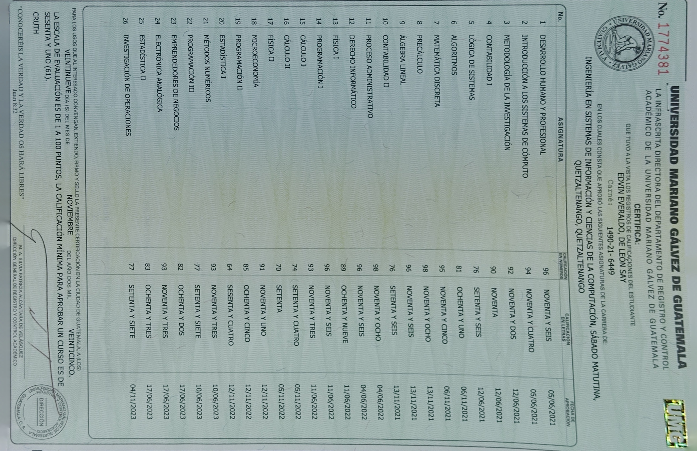
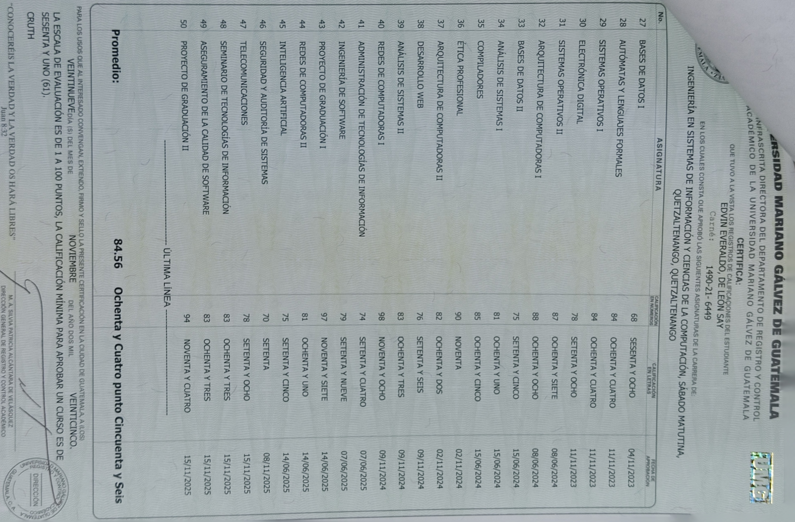
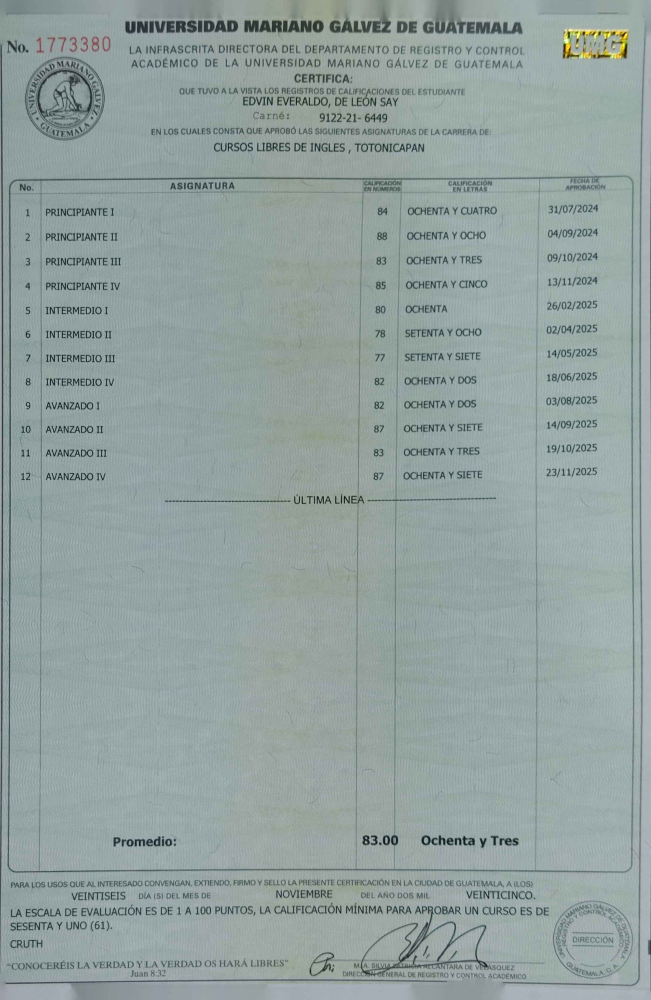

Perfil Profesional
Licenciado en Sistemas con experiencia en desarrollo tanto Backend como Frontend. Apasionado por la tecnología, la optimización de procesos y el aprendizaje continuo. Busco aportar soluciones eficientes y seguir creciendo profesionalmente en un entorno dinámico.
Proyectos Destacados
Aplicaciones y sistemas implementados con éxito
Localito - App de Pedidos
2025Stack: Ionic Angular, Firebase, Leaflet Maps
- Aplicación móvil Android implementada en comercios locales de Totonicapán, optimizando pedidos y gestión de clientes.
Proyectos academicos
2021-2025- Plataforma de simposio, compilador matemático, agentes inteligentes, proyectos con arduino, entre otros sistemas, agentes y bases de datos relacionales y no relacionales
Educación
Licenciatura en Sistemas de Información y Ciencias de la Computación
2021 - 2025Universidad Mariano Gálvez de Guatemala
Certificaciones
- Certificación en Inglés - Universidad Mariano Gálvez (2025)
Cierres y Respaldos
Cierre de pensum que me acredita como Licenciado


1 / 2
Cierre de cursos universitarios

Cierre de cursos de inglés
×